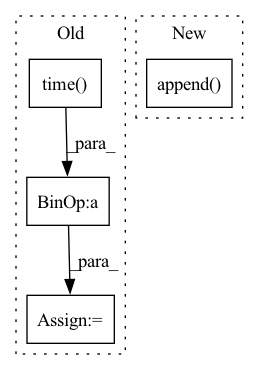

Pattern ID :33996
Before Change
all_fps = [train_rgbs, val_rgbs, test_rgbs]
// prepare and execute file copying
out_path = Path("data").absolute() / "synpick_vid_{}".format(int(time.time() ))
out_path.mkdir(parents=True)
all_out_paths = [(out_path / "train" / "rgb"), (out_path / "val" / "rgb"), (out_path / "test" / "rgb")]
copy_imgs(all_fps, all_out_paths)
After Change
ep = int(Path(rgb).parent.parent.stem) + 1
if ep in train_eps:
train_rgbs.append(rgb)
train_segs.append( seg)
else:
val_rgbs.append(rgb)
val_segs.append(seg)
In pattern: SUPERPATTERN
Frequency: 3
Non-data size: 4
Instances Fragment ID: 97366477
Project Name: ais-bonn/vp-suite
Commit Name: ee1627faf59f835bdcd0693752c2eeb413c5c02c
Time: 2021-07-22
Author: boltres@ais.uni-bonn.de
File Name: scripts/prepare_synpick.py
M Class Name: AnonimousClass
N Class Name: AnonimousClass
M Method Name: prepare_synpick_vid(1)
N Method Name: prepare_synpick_vid(1)
M Parent Class:
N Parent Class:
M File Name: scripts/prepare_synpick.py
N File Name: scripts/prepare_synpick.py
M Start Line: 65
M End Line: 90
N Start Line: 54
N End Line: 82
Before Change
if reset:
self.elapsed_ = time.time() - self.start_time
else:
self.elapsed_ += time.time() - self.start_time
self.started_ = False
if record:
self.records.append(self.elapsed_)After Change
assert self.started_, "timer is not started"
end_event = torch.cuda.Event(enable_timing=True)
end_event.record()
self.event_timers.append( CudaEventTimer(self.start_event, end_event))
self.start_event = None
self.started_ = False
def _get_elapsed_msec(self): Fragment ID: 97366479
Project Name: microsoft/deepspeed
Commit Name: fee73135980e78f8be7e1a3ff556751623ef6aaa
Time: 2022-04-20
Author: olruwase@microsoft.com
File Name: deepspeed/utils/timer.py
M Class Name: Timer
N Class Name: Timer
M Method Name: stop(3)
N Method Name: stop(3)
M Parent Class:
N Parent Class:
M File Name: deepspeed/utils/timer.py
N File Name: deepspeed/utils/timer.py
M Start Line: 44
M End Line: 53
N Start Line: 55
N End Line: 58
Before Change
metrics=[],
verbose=verbose,
)
start_time = time.time()
history = trainer.train(
dataloader,
n_iterations=n_iterations,
load_checkpoint_mode=LoadCheckpointMode.LAST_ITR if not force_overwrite else None,
force_overwrite=force_overwrite,
exec_metrics_on_train=False,
desc=f"Training {checkpoints_name}:{predictor_type.__name__}"
f"<{spikes_auto_encoder.n_units}u, {spikes_auto_encoder.n_encoder_steps}t>",
)
training_time = time.time() - start_time
history.plot(save_path=f"{checkpoint_folder}/figures/training_history.png")
try:
network.load_checkpoint(checkpoint_manager.checkpoints_meta_path, LoadCheckpointMode.BEST_ITR, verbose=verbose)After Change
if not hidden_units:
hidden_units = []
hidden_units.insert(0, params["n_units"])
hidden_units.append( params["n_units"])
network = SequentialModel(
input_transform=[auto_encoder_training_output.spikes_auto_encoder.spikes_encoder],
layers=[
predictor_type( Fragment ID: 97366478
Project Name: neurotorch/neurotorch
Commit Name: 64a0ffca71a7f748afaaa83fbced12fef6d8078a
Time: 2022-09-14
Author: 50332514+JeremieGince@users.noreply.github.com
File Name: applications/time_series_forecasting_spiking/results_generation.py
M Class Name: AnonimousClass
N Class Name: AnonimousClass
M Method Name: train_with_params(12)
N Method Name: train_with_params(12)
M Parent Class:
N Parent Class:
M File Name: applications/time_series_forecasting_spiking/results_generation.py
N File Name: applications/time_series_forecasting_spiking/results_generation.py
M Start Line: 286
M End Line: 352
N Start Line: 196
N End Line: 271